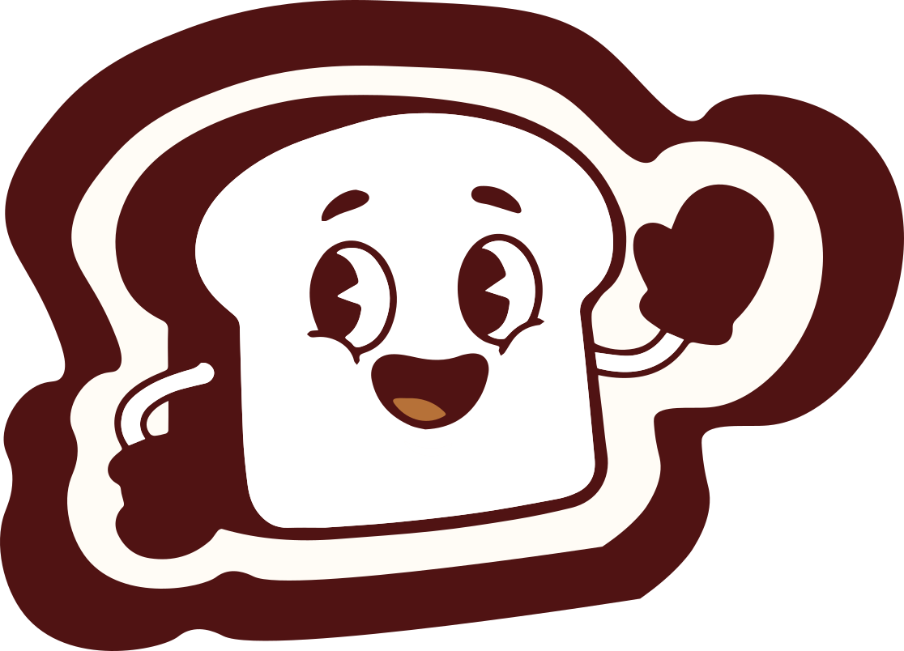

Panar
Creación de identidad de marca para una panadería.
Diseño interfaz de dos
pantallas para la web.
Proyecto académico desarrollado en el marco del Máster en Diseño Gráfico y Desarrollo Web UX/UI de la Cámara de Comercio de Sevilla. El enfoque principal consistió en conceptualizar una marca de panadería ficticia sintetizando su universo visual en un brandboard esencial (logotipo, tipografías y paleta cromática).
#52100F
#7A2415
#B57138
#D4A06A
#FFF5E9
A partir de estos pilares, diseñé en Figma las dos pantallas de interfaz clave de la aplicación, trasladando la identidad de la marca a un entorno digital centrado en la usabilidad, la consistencia visual y una experiencia de usuario (UX) intuitiva.
